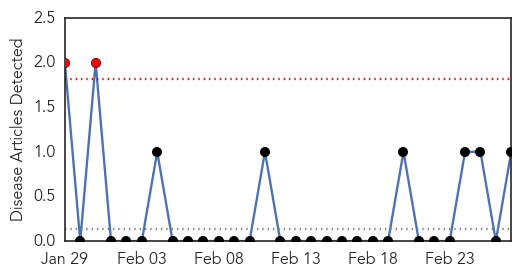
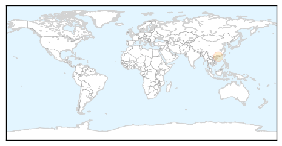
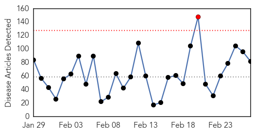
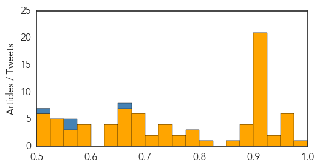

Bubonic Plague
30-Day Web Trend
2 alerts, 0 warnings

30-Day Twitter Trend
0 alerts, 0 warnings

Article Locations
Article Confidences

Top Articles:
Top Tweets:
-
No tweets found for Feb 27, 2015
Unknown
30-Day Web Trend
1 alerts, 0 warnings

30-Day Twitter Trend
0 alerts, 0 warnings

Article Locations

Article Confidences
Top Articles:
- 0.980
- Typhoid always lurking in Kampala slums
- 0.972
- Superbug: Scopes in UCLA Case Linked to Florida Deaths Years Ago
- 0.970
- Scopes in UCLA superbug case linked to unreported deaths in other states
- 0.970
- UN Mission for Ebola Emergency Response (UNMEER) External Situation Report, 26 February 2015 - Sierra Leone
- 0.967
- 200 Cattles infected with Food, Mouth disease in Bauchi
- 0.966
- 200 Cattles infected with Food, Mouth disease in Bauchi
- 0.954
- IU Health LaPorte Hospital flushes water pipes after treating two with Legionella
- 0.933
- 200 Cattle Infected with Foot and Mouth Disease in Bauchi, Articles
- 0.928
- Boston Pilgrim Hospital wards remain closed due to norovirus outbreak
- 0.919
- Diphtheria surge in Sumatra city prompts vaccination drive
- 0.917
- Chicago Tribune
- 0.917
- Chicago Tribune
- 0.917
- Chicago Tribune
- 0.917
- Chicago Tribune
- 0.917
- Chicago Tribune
- 0.917
- Chicago Tribune
- 0.917
- Chicago Tribune
- 0.917
- Chicago Tribune
- 0.917
- Chicago Tribune
- 0.917
- Chicago Tribune
- 0.917
- Chicago Tribune
- 0.917
- Chicago Tribune
- 0.917
- Chicago Tribune
- 0.917
- Chicago Tribune
- 0.917
- Chicago Tribune
- 0.917
- Chicago Tribune
- 0.917
- Chicago Tribune
- 0.913
- Lyme disease treatment costs reach $1.3 billion
- 0.910
- The world windows to Thailand
- 0.904
- Nasty Stomach Bug Becoming Far More Common
- 0.889
- Scopes that caused UCLA superbug deaths linked to past outbreaks
- 0.888
- Scopes in LA superbug case linked to outbreaks in other states
- 0.884
- Scopes may have facilitated CRE outbreaks in other states
- 0.884
- Dangerous C. Difficile Germ Infects 500,000 Americans a Year: CDC
- 0.850
- U.S. News
- 0.814
- Nurse practitioners offer a more holistic approach
- 0.800
- Typhoid cases hit 700, KCCA closes areas
- 0.794
- Outcry as IS group destroys ancient Iraqi artefacts
- 0.776
- Colder weather increases challenges posed by PED – mySteinbach News
- 0.764
- Walnut Creek Dentist, Dr. Stephen Eriksen Now Accepts New Patients for Innovative Gum Disease Treatment, Encourages Patients to Take Advantage of Laser Technology
- 0.760
- Serious Confusional State May Be A Sign of A Rare Brain Disease
- 0.738
- What is the superbug that has killed 3 people?
- 0.737
- Bird Flu In Colorado? Really!?
- 0.733
- New virus linked to death after tick bite
- 0.731
- Respiratory tract infections among children still on the rise
- 0.722
- Studies linking fluoride in water to health issues prompt Australian review
- 0.711
- The Deadly HIV Outbreak In Indiana Linked To Painkiller Abuse And Use Of Infected Needles
- 0.696
- Fluoride in water: New study suggests link to underactive thyroid
- 0.689
- In the house: MPs should engage Executive on collapsing public health delivery
- 0.689
- Security Council to hold emergency session on Ukraine
Showing top 50 articles...
Top Tweets:
- 0.682
- Madre, de vez en cuando se sentiría tan bien contarte un par de cosas.
- 0.670
- RT: 3 More Flu-Related Deaths in Delaware: The number of Delaware flu fatalities this season has risen to 26, the... http://…
- 0.645
- RT: La Respuesta Entertainment está en busca de Talento. ¿Que Buscamos? Buscamos un CANTANTE VARÓN BILINGÜE. El... http:…
- 0.596
- RT: FLU SCAN: Flu's long, slow fade; More H7N9 in Guangdong; CDC on H5 threat to humans; H5N1 serology study http://t.co/UNHrxmI…
- 0.586
- Flu is subsiding in Canada. (deep purple=lots of flu) But seeing a late surge of Flu B viruses, which often happens. http://t.co/H7B3xhFgrp
- 0.573
- 2/2 H5N1 flu has killed 428 people in 11 yrs; MERS has killed close to that in 3. Why hasn't KSA done more to understand & contain it?
- 0.554
- RT: 2/2 H5N1 flu has killed 428 people in 11 yrs; MERS has killed close to that in 3. Why hasn't KSA done more to under…
- 0.523
- RT: NEWS SCAN: Saudi MERS cases; New bornavirus in Europe; Resistant Salmonella, Campylobacter; Marburg virus inhibition http://t.…